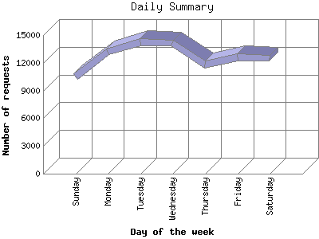

The Daily Summary identifies the level of activity as a total for each day of the week. This summary also compares the level of activity on weekdays and weekends as a total for the report time frame.

| Day of the week | Number of requests | Number of page requests | |
|---|---|---|---|
| 1. | Sunday | 10,481 | 1,288 |
| 2. | Monday | 13,156 | 1,636 |
| 3. | Tuesday | 14,238 | 1,907 |
| 4. | Wednesday | 14,181 | 1,752 |
| 5. | Thursday | 11,818 | 1,568 |
| 6. | Friday | 12,585 | 1,575 |
| 7. | Saturday | 12,477 | 1,720 |
| Total Weekdays | 65,978 | 8,438 | |
| Total Weekend | 22,958 | 3,008 | |
This report was generated on April 3, 2004 00:36.
Report time frame December 11, 2003 00:13 to April 2, 2004 23:56.
| Web statistics report produced by: | |
| analog 5.1 | Report Magic for Analog 2.10 |